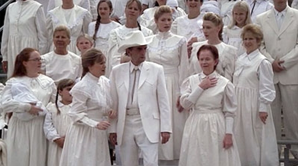
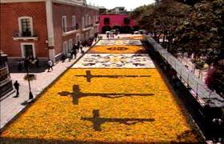
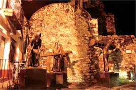

Semana Santa en Mexico

La Semana Santa está precedida por la Cuaresma que se refiere al tiempo de preparación donde se recuerda los 40 días de Jesucristo en el desierto. Las celebraciones centrales de la Semana Santa son: Jueves Santo, Viernes Santo, Sábado Santo y Domingo de Resurrección. La Semana Santa es el momento litúrgico más intenso de todo el año. Sin embargo, para muchos católicos se ha convertido sólo en una ocasión de descanso y diversión. Se olvidan de lo esencial: esta semana la debemos dedicar a la oración y la reflexión en los misterios de la Pasión y Muerte de Jesús para aprovechar todas las gracias que esto nos trae.
A la Semana Santa se le llamaba en un principio “La Gran Semana”. Ahora se le llama Semana Santa o Semana Mayor y a sus días se les dice días santos. Esta semana comienza con el Domingo de Ramos y termina con el Domingo de Pascua. Durante la Semana Santa, el católico cumple con diversos actos, como: procesiones, escenificación del drama de la muerte y pasión de Cristo. Los penitentes se someten a duras cargas como símbolo de su auto sacrificio y, en el día Viernes Santo, los fieles deben de guardar ayuno y abstenerse de comer carne.

Cristianos evangélicos

Testigos de Jehová

MormónesLa Semana Santa de los mormónes inicia desde el Lunes Santo, y como suelen hacer muy habitualmente durante muchas semanas del año, se reúnen en lo que llaman la “noche del hogar” para recordar pasajes de la Biblia protestante y, sobre todo, de sus libros sagrados. Son momentos de estar en familia, de compartir, y recordar cómo Jesús, que era un hombre según ellos, sólo un hombre, se hizo Dios también, otro dios, por sus propias fuerzas y comportamiento, según ellos afirman, y esto mismo es lo que ellos también quieren hacer, convertirse en dioses y regentar el gobierno de algunos sistemas solares del universo. En general, a pesar de sus diferencias de doctrina, es importante considerar que estos días no son el único momento para adorar a Dios y hallar comunión consigo mismo. Sumado a eso, las actividades en la familia también contribuyen a nutrir el alma. Por lo tanto, esta Semana Santa… ¡Ama, agradece y vive en paz!

Durante la temporada vacacional de Semana Santa que se lleva a cabo en el municipio de Atlixco, el alcalde Ricardo Camacho Corripio dio a conocer las tradiciones de fe que distinguen a la entidad que, aunado a los diversos atractivos que la región ofrece, permitirá atraer más de 80 mil visitantes en estos días. Lo anterior representa un impacto en la economía de las familias de la entidad —de manera directa e indirecta— pues se calcula se tenga una derrama económica mayor a los 20 millones de pesos.
“Entre las tradiciones que han distinguido a Atlixco es la ‘Procesión del Silencio’ en la comunidad de Nexatengo, la cual es realizada por la cofradía de Nazarenos de la entidad y la ‘Procesión de Engrillados’. Cabe mencionar que ambos eventos son actos de penitencia, fe y de arrepentimiento, mismos que se realizarán el próximo 6 de abril a partir de la seis de la mañana en Santa Lucía Cosamaloapan”, refirió el alcalde. Cabe precisar que en la “Procesión de los Engrillados” los participantes se caracterizan por vestir de luto y portar pesadas cadenas de aproximadamente 60 kilos, además de ponerse espinas en el cuerpo. Ellos recorren las principales calle de la ciudad y tienen una preparación, tanto espiritual como física de dos meses. Se realizará también el viernes 6 de abril.
Alfombras


La celebración de Semana Santa es para los poblanos una de las conmemoraciones más importantes del año cristiano; durante estos días aquellas personas que profesan alguna de las diferentes confesiones de la fe cristiana acuden a las iglesias más emblemáticas de Puebla para recordar la Pasión, Muerte y Resurrección de Jesús de Nazaret.La Semana Santa no tiene una fecha definida, aunque casi siempre se presenta entre los meses de Marzo y Abril, esto debido a que obedece al calendario católico y del inicio de la cuaresma que son cuarenta días previamente de la preparación de la Pascua. Esta tradicional conmemoración religiosa, evoca cada año, la pasión, muerte y resurrección de Jesús de Nazaret. Empieza, por lo general, con el domingo de Ramos, pero en Puebla, se inicia con el viernes de Dolores, en la cual se recuerda el sufrimiento de María por su hijo, este acontecimiento se realiza con una misa en cada iglesia de la ciudad a las siete de la noche y personas que visitan la iglesia, después de entrar al templo degustan de la comida que venden afuera.
Procesión del viernre santo.
Una de los actos mas significativos durante la semana santa es la tradicional Procesión de Viernes santo, misma que este 2016 cumple 25 años y que es considerada de las mas grandes del país.
Previo primer mensaje arzobispal, toma la calle 16 de septiembre hasta el Zócalo para dar vuelta.
Después del segundo mensaje del Sr. Arzobispo, continúa por la calle Reforma hasta el Zócalo y por la 16 de septiembre al atrio de la Catedral, arribando alrededor de las 15:00hrs, donde se da la bendición y concesión de indulgencia plenaria. Posteriormente, las imágenes regresan a su templo.En Iztapalapa tiene lugar una ceremonia, fiesta y representación de la Pasión, que no responde ni a una narración sacra, ni a un teatro tradicional: es una expresión de múltiples aportaciones que se funde en una particular sincretización.Iztapalapa, una de las 16 delegaciones que constituyen el Distrito Federal, ha sustituido sus canales, chinampas y trajineras con verduras y flores, por ejes viales y el Metro. Tiene en el Cerro de la Estrella, en sus templos, plazas y jardines de Ia cabecera, los espacios sagrados donde se escenifica cada año la representación ritual por excelencia.
La coexistencia de Iztapalapa con la gran urbe, no ha logrado borrar Ias viejas costumbres; sus habitantes renuevan sus lazos de amistad, de compadrazgo y vecindad, de pertenencia e identidad con el barrio y con Ia localidad en las distintas fiestas de su calendario, pero es en la Semana Santa cuando éstos aparecen con mayor fuerza. Los moradores de los ocho barrios: La Asunción, San Ignacio, Santa Bárbara, San Lucas, San Pablo, San Miguel, San Pedro y San José, conviven entre la modernidad y la tradición: los que mantienen un ancestral apego a la tierra y los que llegan y demandan un lugar donde vivir. Comparten una costumbre heredada de muchos años, un deseo de mantener la unidad, a través de la cooperación y el esfuerzo colectivo para representar, con gran realismo, la Pasión de Jesucristo en una fiesta que permite la reafirmación y Ia cohesión cultural de sus residentes.
Una de las más grandes representaciones del Vía Crucis en México y seguramente del mundo entero. En todo San Luis Potosí se organizan un buen número de eventos culturales y religiosos para conmemorar la Semana Santa, desde turismo religioso y cultural, como el espectáculo de la Fiesta de la Luz, museos e iglesias, hasta turismo de aventura. Sin embargo, el evento más importante y de mayor tradición entre los lugareños tiene lugar el Viernes Santo, cuando se realiza la Procesión del Silencio, una de las más arraigadas debido a su solemnidad y misticismo. No importa que no seas católico, ven a vivir una experiencia digna de recordar en la que mientras más cosas sucedan, más querrás conocer el origen y significado de lo que estás presenciando. La procesión inicia al anochecer, justo a las 20 horas, cuando una multitud sale a las calles en completo silencio guardando luto por la Pasión y Muerte de Cristo, según la tradición católica. La Plaza del Carmen es el punto de reunión de las “Cofradías” e inicio donde las tropas tocan sus clarines decretando el inicio del evento y ordenando así un silencio sepulcral. La iluminación de las calles baja para dar paso a los cirios que portan los fieles y que dan a la procesión un carácter de mayor dramatismo.


Por su parte, los “flagelantes” llevan en brazos una cruz de madera de hasta seis kilogramos de peso, un rosario, y una “disciplina” (una especie de fuete) hecha con crin de caballo y clavos con las que se auto flagelan la espalda durante todo el recorrido hasta provocar el sangrado. Para las mujeres el sacrificio no es menor, caminan completamente vestidas de negro, descalzas y completamente encorvadas hacia enfrente, con un pesado crucifijo en los antebrazos y un rosario. Otras llevan cirios encendidos en ambas manos y caminan con los tobillos aprisionados con cadenas.
A pesar del anonimato que se guarda durante la procesión, para formar parte de ella es necesario registrarse con anterioridad.cDurante el resto de la semana continúan los ritos propios de la religión católica: el miércoles se conmemora la aprehensión de Jesús; el Jueves Santo se lleva a cabo la simbólica ceremonia del Lavatorio de pies y la última Cena. El viernes se recuerda el Vía Crucis, donde Jesús es juzgado, flagelado y finalmente muere en la cruz. Para el Sábado de Gloria todo el pueblo se mantiene en silencio en señal de luto hasta el Domingo de Resurrección donde a través de una representación vuelve el Cristo resucitado. Ven a Taxco y sé testigo del fervor que los guerrerenses guardan a sus antiguos rituales.
Durante toda una semana, en las calles de este Pueblo Mágico guerrerense se llevan a cabo procesiones en las cuales sus habitantes dan muestra de su fe a través de sacrificios simbólicos, y hasta físicos, para expiar alguna culpa o simplemente para ofrendar su sufrimiento a quien consideran su salvador. Por las calles empedradas desfilan las dramáticas procesiones acompañadas por imágenes religiosas que testifican el sacrificio de penitentes encapuchados, vestidos de negro que arrastran cadenas sujetas a sus tobillos a manera de sacrificio.
En la región del Istmo de Tehuantepec, Oaxaca cuenta con una gran cantidad de tradiciones religiosas durante la época de la Semana Mayor que se llevan a cabo en los barrios de Santo Domingo Tehuantepec, Juchitán, Salina Cruz, Ixtaltepec, Ixtepec, San Blas Atempa, etc. Asimismo, tanto en la Ventosa como en Las Escolleras , en el Puerto de Salina Cruz, se llevan a cabo diversas actividades deportivas, aunado a la belleza y tranquilidad de sus aguas y la deliciosa gastronomía istmeña
Dentro de la gama de festejos religiosos para los Oaxaqueños la cuaresma y la Semana Santa reviste gran significado. El Primer Viernes de Cuaresma la Festividad del Señor de Las Misericordias en el Templo de San Juan de Dios, el Segundo Viernes de Cuaresma la Festividad del Señor de Las Maravillas en el Templo de La Defensa, el Cuarto Viernes de Cuaresma la Festividad de la Samaritana en la Ciudad de Oaxaca, el Quinto Viernes de Cuaresma la festividad del Señor de las Peñas en el Templo del Carmen Alto y la Festividad del Señor San Lázaro en la Villa de San Antonino Castillo Velasco. El Sexto Viernes de Cuaresma, es el viernes de Dolores, una tradición de gran devoción en donde se rinde culto a la madre de Dios, colocando el Altar de la Virgen de Dolores, llegando así a la Semana Santa, la cual inicia para los Oaxaqueños con el Domingo de ramos, rememorando la entrada de Jesús en Jerusalén y la Festividad del Señor del Burrito en la Población de San Antonino Castillo Velasco. En el Estado de Oaxaca la Semana Santa muestra tintes diversos: desde el respeto y solemnidad con que los oaxaqueños acuden a los templos a tomar ceniza y el recogimiento con el que los católicos manifiestan su luto durante esta semana, hasta la alegría de los “Viernes del Llano” que los jóvenes, celebran en la ciudad capital.
Aunado a este espíritu de festividad, es la hospitalidad oaxaqueña y la impresionante belleza del litoral, lo que convierte a la Costa de Oaxaca en una de las mejores opciones de viajedurante la Semana Santa: sol, vegetación exuberante, hermosas playas de tonos celestes, cálidas y transparentes. Las Bahías de Huatulco incluyen a sus atractivos una excelente y moderna infraestructura turística con servicios de alta calidad, un club de golf a la orilla del mar y un sinnúmero de actividades como la pesca deportiva, rappel, buceo, snorkel, kayaking, rafting, veleo, jet-ski, cuatrimotos, recorridos a caballo, bicicleta, visitas a las diferentes fincas cafetaleras, además de una exquisita gastronomía y su dinámica vida nocturna.
Por su parte Puerto Escondido es un destino tradicional de playas como Bacocho, Carrizalillo, Puerto Angelito, Principal, Marinero y Zicatela donde se pueden practicar actividades acuáticas como surfing, buceo o natación. El visitante puede disfrutar de la deliciosa comida regional e internacional en magníficos restaurantes. Un confortable descanso le aguarda en diversos hoteles, villas, cabañas y bungalows, además de compartir las diferentes actividades que con motivo de la Semana Santa se llevan a cabo en la costa oaxaqueña.
En el Estado de Oaxaca la Semana Santa muestra tintes diversos: desde el respeto y solemnidad con que los oaxaqueños acuden a los templos a tomar ceniza y el recogimiento con el que los católicos manifiestan su luto durante esta semana, hasta la alegría de los “Viernes del Llano” que los jóvenes, celebran en la ciudad capital, llenos de entusiasmo; o la colorida generosidad del “Día de la Samaritana”, con el obsequio de aguas frescas en templos, escuelas, oficinas, negocios, etc.
En la región del Istmo de Tehuantepec, Oaxaca cuenta con una gran cantidad de tradiciones religiosas durante la época de la Semana Mayor que se llevan a cabo en los barrios de Santo Domingo Tehuantepec, Juchitán, Salina Cruz, Ixtaltepec, Ixtepec, San Blas Atempa, etc. Asimismo, tanto en la Ventosa como en Las Escolleras , en el Puerto de Salina Cruz, se llevan a cabo diversas actividades deportivas, aunado a la belleza y tranquilidad de sus aguas y la deliciosa gastronomía istmeña.
Oaxaca